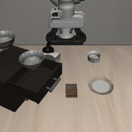
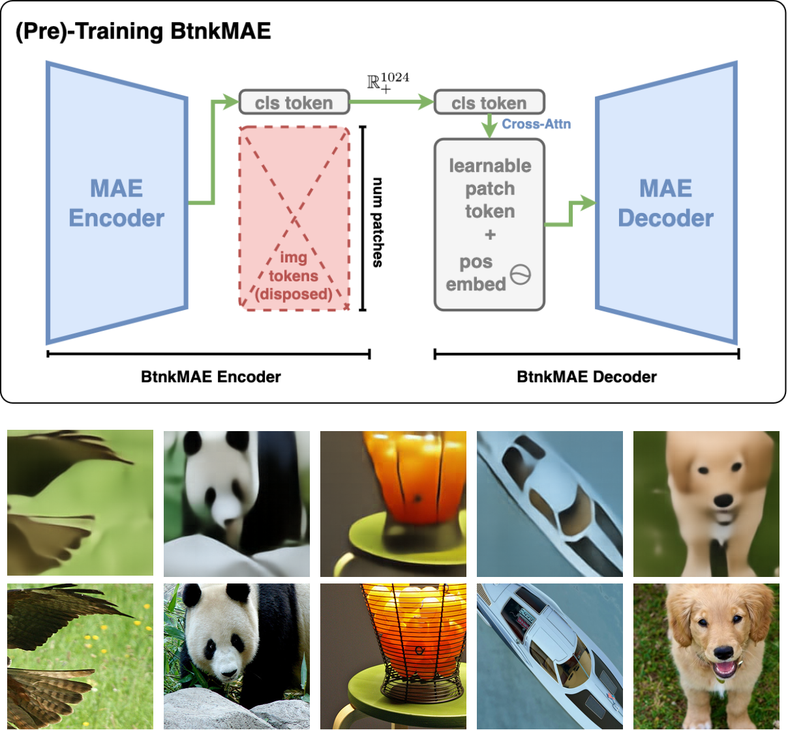
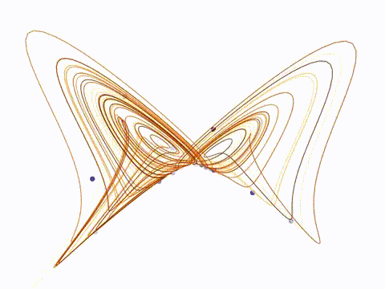

<table style="width:100%;max-width:800px;border:0px;border-spacing:0px;border-collapse:separate;margin-right:auto;margin-left:auto;"><tbody>
  <tr style="padding:0px">
    <td style="padding:0px">
      <table style="width:100%;border:0px;border-spacing:0px;border-collapse:separate;margin-right:auto;margin-left:auto;"><tbody>
        <tr style="padding:0px">
          <td style="padding:2.5%;width:63%;vertical-align:middle">
            <p class="name" style="text-align: center;">
              Zhaoze Wang
            </p>
            <p>
              I'm a PhD student at the <a href="https://www.grasp.upenn.edu/" target="_blank">GRASP (General Robotics, Automation, Sensing & Perception)
              Lab</a> and the <a href="https://cni.upenn.edu/" target="_blank">Computational Neuroscience Initiative (CNI)</a> at the University of Pennsylvania.
              <br><br>
              Before this, I completed my B.S. in Computer Engineering at Boston University and my
              M.S.E. in Computer and Information Science at the University of Pennsylvania.
              <br><br>
              <strong style="color: #e7931e;">I'm actively seeking Summer 2026 internships in embodied AI, spatial perception and reasoning, and world models.</strong>
            </p>
            <p style="text-align:center">
              <a href="mailto:zhaoze@seas.upenn.edu" target="_blank">Email</a> &nbsp;/&nbsp;
              <a href="https://scholar.google.com/citations?user=8H5kbvEAAAAJ&hl=en" target="_blank">Google Scholar</a> &nbsp;/&nbsp;
              <a href="https://github.com/zhaozewang/" target="_blank">GitHub</a> &nbsp;/&nbsp;
              <a href="https://www.linkedin.com/in/zhaozew/" target="_blank">LinkedIn</a> &nbsp;/&nbsp;
              <a href="https://twitter.com/zhaoze_wang" target="_blank">X</a>
            </p>
          </td>
          <td style="padding:2.5%;width:37%;max-width:37%">
            
          </td>
        </tr>
      </tbody></table>

      <table style="width:100%;border:0px;border-spacing:0px;border-collapse:separate;margin-right:auto;margin-left:auto;"><tbody>
          <tr>
          <td style="padding:16px;width:100%;vertical-align:middle">
            <h2>Research Interests</h2>
            <!-- AI Researcher version -->
            <div class="mode-cs">
              <p>
                I build <strong><em>spatial world models</em></strong> for embodied AI.
                My research focuses on how agents can learn compact spatial representations
                from multi-sensory inputs to support navigation, planning, and manipulation.
              </p>
              <p>
                My recent work develops RNN-based world models that enable
                <strong>goal-directed path planning</strong> in visually realistic environments
                (Habitat-Sim), with applications to robot navigation and embodied agents
                [<a href="#remi">REMI @ NeurIPS 2025</a>].
              </p>
              <p>
                I also build tools for the community:
                <a href="#btnk_mae">BtnkMAE</a> (compact vision encoder),
                <a href="https://ratatougym.github.io">RatatouGym</a> (navigation simulation),
                and <a href="https://github.com/zhaozewang/OctoVLA">OctoVLA</a> (vision-language-action models for manipulation).
              </p>
            </div>
            <!-- Comp. Neuroscientist version -->
            <div class="mode-ns">
              <p>
                My research explores how the brain builds <strong><em>spatial representations</em></strong>
                to support memory, navigation, and planning.
              </p>
              <p>
                I study how hippocampal place cells and grid cells emerge from
                learning temporally continuous sensory experiences
                [<a href="#tms">Time Makes Space</a>, <a href="#trading_place_for_space">Trading Place for Space</a>],
                and how these representations support cue-triggered goal retrieval
                and mental simulation of planned routes
                [<a href="#remi">REMI</a>].
              </p>
              <p>
                My most recent work proposes a unified, system-level theory of the
                hippocampus-MEC loop, accepted to <span style="color: #e7931e;">NeurIPS 2025</span>.
              </p>
            </div>
          </td>
        </tr>
      </tbody></table>

      <div class="mode-toggle" style="padding-bottom: 0.5rem;">
        <span style="color: #555; font-size: 1.2em;">If you are a: &nbsp;&nbsp;</span>
        <button id="mode-cs" onclick="toggleMode()" class="mode-btn active">AI Researcher</button>
        <button id="mode-ns" onclick="toggleMode()" class="mode-btn">Comp. Neuroscientist</button>
      </div>

      <!-- Research Keywords Section -->
      <div style="text-align: center; padding: 16px; border-bottom: 0.07rem solid #e0e0e0; border-top: 0.07rem solid #e0e0e0; margin: 0 16px;">
        <div style="margin-bottom: 0.6rem;">
          <span style="font-size: 0.9rem; font-weight: 600;">Research keywords:</span>
        </div>
        <div style="display: flex; flex-wrap: wrap; justify-content: center; gap: 0.5rem; max-width: 800px; margin: 0 auto;">
          <!-- Common -->
          <div class="keyword-tag">multi-sensor fusion</div>
          <!-- CS keywords -->
          <div class="keyword-tag mode-cs">world models</div>
          <div class="keyword-tag mode-cs">embodied AI</div>
          <div class="keyword-tag mode-cs">Reinforcement Learning</div>
          <div class="keyword-tag mode-cs">VLA</div>
          <div class="keyword-tag mode-cs">visual navigation</div>
          <div class="keyword-tag mode-cs">spatial reasoning</div>
          <div class="keyword-tag mode-cs">robot learning</div>
          <div class="keyword-tag mode-cs">Vision Transformer</div>
          <!-- NS keywords -->
          <div class="keyword-tag mode-ns">place cells</div>
          <div class="keyword-tag mode-ns">grid cells</div>
          <div class="keyword-tag mode-ns">hippocampus</div>
          <div class="keyword-tag mode-ns">spatial memory</div>
          <div class="keyword-tag mode-ns">path-integration</div>
        </div>
      </div>


      <table style="width:100%;border:0px;border-spacing:0px 10px;border-collapse:separate;margin-right:auto;margin-left:auto;"><tbody>
      <tr>
        <td style="padding:16px;">
          <h2>Publications</h2>
        </td>
      </tr>

      <tr id="remi">
        <td style="padding:16px;width:20%;vertical-align:middle">
          
        </td>
        <td style="padding:8px;width:80%;vertical-align:middle">
          <span class="papertitle">REMI: Reconstructing Episodic Memory During Internally Driven Path Planning</span>
          <br>
          <div style="margin-top: 6px;"></div>
          <em>NeurIPS</em>, 2025
          <br>
          <strong>Zhaoze Wang</strong>,
          Genela Morris<sup>†</sup>,
          Dori Derdikman<sup>†</sup>,
          <a href="https://pratikac.github.io/" target="_blank">Pratik Chaudhari<sup>†</sup></a>,
          <a href="https://www.physics.upenn.edu/~vbalasub/Home.html" target="_blank">Vijay Balasubramanian<sup>†</sup></a>
          <br>
          <div style="margin-top: 4px;"></div>
          <a href="https://arxiv.org/abs/2507.02064" target="_blank">Paper</a>
          &nbsp;/&nbsp;
          <a href="https://zhaozewang.github.io/remi/" target="_blank">Project Page</a>
          &nbsp;/&nbsp;
          <a href="https://ratatougym.github.io" target="_blank">Simulation Suite</a>
          &nbsp;/&nbsp;
          <a href="https://github.com/grasp-lyrl/btnk_mae" target="_blank">Vision Encoder</a>
          <p class="mode-ns" style="margin-top: 6px;">
            We propose REMI, a unified, system-level theory of the hippocampus-medial entorhinal cortex (MEC)
            loop. The model explains how interactions between known spatial representation cell 
            types could support cue-triggered goal retrieval, path planning, and reconstruction of 
            sensory experiences along planned routes.
          </p>
          <p class="mode-cs" style="margin-top: 6px;">
            An RNN-based spatial world model enabling cue-triggered path planning in visually realistic
            environments (Habitat-Sim). Integrates a ViT-based vision encoder (BtnkMAE) with a compact
            recurrent planning module for goal-directed navigation from visual inputs. Trained with
            multi-GPU DDP and mixed precision for scalable simulation experiments.
          </p>
        </td>
      </tr>

      <tr id="tms">
        <td style="padding:16px;width:20%;vertical-align:middle">
          
        </td>
        <td style="padding:8px;width:80%;vertical-align:middle">
          <span class="papertitle">Time Makes Space: Emergence of Place Fields in Networks Encoding Temporally Continuous Sensory Experiences</span>
          <br>
          <div style="margin-top: 6px;"></div>
          <em>NeurIPS</em>, 2024
          <br>
          <strong>Zhaoze Wang<sup>†</sup></strong>,
          Ronald W. Di Tullio<sup>†</sup>,
          Spencer Rooke,
          <a href="https://www.physics.upenn.edu/~vbalasub/Home.html" target="_blank">Vijay Balasubramanian</a>
          <br>
          <div style="margin-top: 4px;"></div>
          <a href="https://proceedings.neurips.cc/paper_files/paper/2024/file/42aae0e655c77d93edad9171ad9f4717-Paper-Conference.pdf" target="_blank">Paper</a>
          &nbsp;/&nbsp;
          <a href="https://github.com/zhaozewang/place_cells_episodic_rnn" target="_blank">Code</a>
          &nbsp;/&nbsp;
          <a href="https://neurips.cc/virtual/2024/poster/93988" target="_blank">Video</a>
          &nbsp;/&nbsp;
          <a href="https://zhaozewang.github.io/projects/time_makes_space" target="_blank">Project Page</a>
          <p class="mode-ns" style="margin-top: 6px;">
            We model hippocampal CA3 as an autoencoder trained to recall temporally continuous sensory 
            experiences during spatial traversal, where place cell like activity emerges in the hidden layer. 
            The model reproduces key CA3 properties, including remapping, orthogonal representations, 
            and stability during continual learning. See also <a href="#trading_place_for_space">Trading Place for Space</a>. 
          </p>
          <p class="mode-cs" style="margin-top: 6px;">
            Demonstrates emergence of localization-relevant spatial representations from unsupervised
            learning on continuous sensory streams. An RNN trained to autoencode sensory signals develops
            spatially localized representations that reorganize across environments and recover with
            relearning, forming a scaffold for continual multimodal sensory integration.
            See also <a href="#trading_place_for_space">Trading Place for Space</a>.
          </p>
        </td>
      </tr>

      <tr id="trading_place_for_space">
        <td style="padding:16px;width:20%;vertical-align:middle">
          
        </td>
        <td style="padding:8px;width:80%;vertical-align:middle">
          <span class="papertitle">Trading Place for Space: Increasing Location Resolution Reduces Contextual Capacity in Hippocampal Codes</span>
          <br>
          <div style="margin-top: 6px;"></div>
          <em>NeurIPS</em> <span style="color: #e7931e;">&nbsp;🏆 Oral Presentation</span>, 2024
          <br>
          Spencer Rooke,
          <strong>Zhaoze Wang</strong>,
          Ronald W. Di Tullio,
          <a href="https://www.physics.upenn.edu/~vbalasub/Home.html" target="_blank">Vijay Balasubramanian</a>
          <br>
          <div style="margin-top: 4px;"></div>
          <a href="https://neurips.cc/virtual/2024/poster/95187" target="_blank">Paper</a>
          &nbsp;/&nbsp;
          <a href="https://www.youtube.com/watch?v=qO7owsSloT8" target="_blank">Video</a>
          <p class="mode-ns" style="margin-top: 6px;">
            We showed that increasing the resolution of spatial encoding reduces the number of 
            distinct contexts that can be stored by place cells, revealing a trade-off between 
            position accuracy and contextual capacity. We derived theoretical bounds on this 
            trade-off using manifold geometry and neural noise models. 
            See also <a href="#tms">Time Makes Space</a>.
          </p>
          <p class="mode-cs" style="margin-top: 6px;">
            A geometric framework quantifying trade-offs between spatial resolution and contextual
            capacity in self-localizing systems. Modeling population activity as high-dimensional
            manifolds, we show that separable contexts scale exponentially with network size but
            trade off with spatial resolution. See also <a href="#tms">Time Makes Space</a>.
          </p>
        </td>
      </tr>

      </tbody></table>


      <table style="width:100%;border:0px;border-spacing:0px 10px;border-collapse:separate;margin-right:auto;margin-left:auto;"><tbody>
        <tr>
          <td style="padding:16px;">
            <h2>Opensource</h2>
          </td>
        </tr>
        <tr>
          <td style="padding:16px;width:20%;vertical-align:middle">
            
          </td>
          <td style="padding:8px;width:80%;vertical-align:middle">
            <a href="https://github.com/zhaozewang/OctoVLA" target="_blank">
              <span class="papertitle">OctoVLA: Vision-Language-Action Model for Manipulation</span>
            </a>
            <br>
            <div style="margin-top: 8px;"></div>
            <a href="https://github.com/zhaozewang/OctoVLA" target="_blank">Source Code</a>
            <div style="margin-top: 4px;"></div>
            <p>
              Deployed Octo, a generalist VLA model, on the LIBERO manipulation benchmark with language-conditioned control.
              Evaluated model performance across 10 manipulation tasks with varying language instructions.
              Integrating BtnkMAE as a compact vision encoder to compare sample efficiency with the default ViT encoder.
            </p>
          </td>
        </tr>
        <tr>
          <td style="padding:16px;width:20%;vertical-align:middle">
            <a href="images/btnk_mae/btnk_results.png" target="_blank">
              
            </a>
          </td>
          <td style="padding:8px;width:80%;vertical-align:middle">
            <a href="https://github.com/grasp-lyrl/btnk_mae" target="_blank" id="btnk_mae">
              <span class="papertitle">BtnkMAE: Compact Vision Encoder for Embodied AI</span>
            </a>
            <br>
            <div style="margin-top: 8px;"></div>
            <a href="https://github.com/grasp-lyrl/btnk_mae" target="_blank">Source Code</a>
            <div style="margin-top: 4px;"></div>
            <p>
              Compact vision encoder compressing images to 1024-D decodable embeddings, 196× more compact than standard ViT.
              Pretrained ViT-B/L on ImageNet-1K using DDP across 6×RTX 4090 GPUs.
              Designed for embodied AI applications where memory and bandwidth are constrained.
            </p>
          </td>
        </tr>
        <tr>
          <td style="padding:16px;width:20%;vertical-align:middle">
            
          </td>
          <td style="padding:8px;width:80%;vertical-align:middle">
            <a href="https://ratatougym.github.io/" target="_blank">
              <span class="papertitle">RatatouGym: Navigation Simulation Framework</span>
            </a>
            <br>
            <div style="margin-top: 8px;"></div>
            <a href="https://ratatougym.github.io/" target="_blank">Documentation</a>
            &nbsp;/&nbsp;
            <a href="https://github.com/ratatougym/ratatougym" target="_blank">Source Code</a>
            <div style="margin-top: 4px;"></div>
            <p>
              Open-source navigation framework that directly simulates sensory inputs during navigation.
              Engineered modular backends (FAISS, K-d tree, PyTorch) for scalable multi-agent experiments.
              Used in REMI (NeurIPS 2025) for training spatial world models.
            </p>
          </td>
        </tr>
        <tr>
          <td style="padding:16px;width:20%;vertical-align:middle">
            
          </td>
          <td style="padding:8px;width:80%;vertical-align:middle">
            <a href="https://www.nn4n.org/" target="_blank">
              <span class="papertitle">NN4N: Modular RNN Framework</span>
            </a>
            <br>
            <div style="margin-top: 12px;">
              <a href="https://opensource.org/licenses/MIT"></a>
              <a href="https://badge.fury.io/py/nn4n"></a>
              <a href="https://pepy.tech/project/nn4n"></a>
              <a href="https://pepy.tech/project/nn4n"></a>
            </div>
            <div style="margin-top: 8px;"></div>
            <a href="https://www.nn4n.org/" target="_blank">Documentation</a>
            &nbsp;/&nbsp;
            <a href="https://github.com/NN4Neurosim/nn4n" target="_blank">Source Code</a>
            <div style="margin-top: 4px;"></div>
            <p>
              PyTorch framework for hierarchical RNNs with custom autograd, connectivity constraints, and optimizers.
              Supports biologically plausible architectures with sparse, structured connectivity.
              Published on PyPI with 6K+ downloads.
            </p>
          </td>
        </tr>
      </tbody></table>

      <table style="width:100%; margin:0 auto; border:0; border-spacing:0; padding:16px;"><tbody>
        <tr>
          <td>
            <h2>Miscellanea</h2>
          </td>
        </tr>
      </tbody></table>
      <table style="width:100%;border:0px;border-spacing:0px;border-collapse:separate;margin-right:auto;margin-left:auto;"><tbody>

        <tr>
          <td align="center" style="padding:16px;width:20%;vertical-align:middle">
            <div class="colored-box">
              Service
            </div>
          </td>
          <td style="padding:8px;width:80%;vertical-align:center">
            <p><a href="https://neurips.cc/" target="_blank">Reviewer, NeurIPS 2025</a></p>
            <p>
              <a href="https://online.seas.upenn.edu/courses/ese-5460-deep-learning/" target="_blank">
                Teaching Assistant, ESE 5460: Principles of Deep Learning, Fall 2025
              </a>
            </p>
            <p>Teaching Assistant, PHYS 5585: Comp. and Theoretical Neurosci., Spring 2026</p>
          </td>
        </tr>

      </tbody></table>

      <table style="width:100%;border:0px;border-spacing:0px;border-collapse:separate;margin-right:auto;margin-left:auto;"><tbody>
        <tr>
          <td style="padding:0px">
            <br>
            <p style="text-align:center;font-size:1.2em">
              Design and code of this website is adapted from <a href="https://github.com/jonbarron/jonbarron_website" target="_blank" style="font-size:1.1em">Jon Barron's website</a>.
            </p>
          </td>
        </tr>
      </tbody></table>
    </td>
  </tr>
</table>
